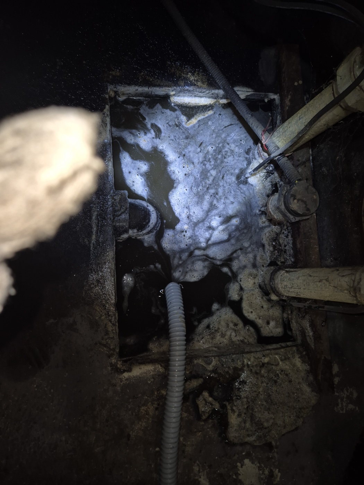
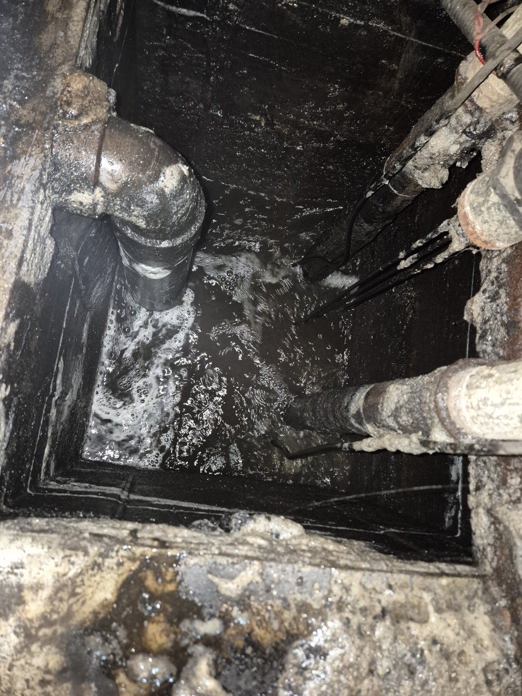

안녕하세요.. 고고고 설비입니다.. 오늘은 천안시 두정동에 있는 건물 지하에서 하수구막힘 신고를 받고 다녀온 현장입니다. 지하라 환기도 잘 안 되고 어두워서 랜턴 없이는 작업이 힘든 공간이었어요.
지하 공간 안쪽 맨홀을 열어보니 배관 여러 개가 한곳에 모이는 구조였습니다. 랜턴으로 비춰가며 물이 고여있는 지점부터 확인했는데, 거품이 섞인 물이 쉽게 안 빠지는 걸 보고 안쪽 깊숙이 막힘이 있다는 걸 짐작할 수 있었어요.
고압 호스를 맨홀 안쪽으로 밀어 넣고 반복해서 세척을 진행했습니다. 좁고 어두운 공간이라 몸을 낮추고 자세를 이리저리 바꿔가며 작업해야 했어요. 여러 배관이 교차하는 지점이라 호스 각도를 맞추는 데도 신경이 많이 쓰였습니다.
세척을 마치고 다시 한번 맨홀 안쪽을 확인해보니, 고여있던 물이 거품과 함께 빠르게 빠지는 걸 볼 수 있었습니다. 여러 배관이 모이는 구간이라 한 번에 시원하게 뚫리지 않아서 몇 차례 더 반복해야 했어요.

작업을 마치고 물을 내려서 정상적으로 배수되는 걸 최종 확인했습니다. 지하 배관은 평소 눈에 잘 안 띄는 만큼, 배수가 느려지는 신호가 있을 때 미리 점검받으시는 걸 권해드립니다.
고고고 설비는 주택, 아파트, 원룸, 상가, 공장의 생활 하수 오수 배관을 관리해 주는 업체입니다. 고고고 설비에 전화 주시면 친절상담 정확한 진단 확실한 해결로 보답해 드리겠습니다!!